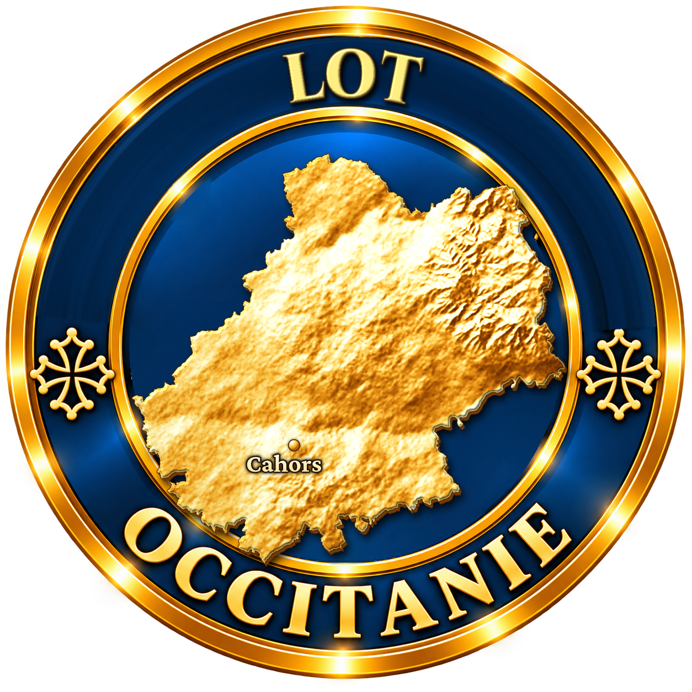
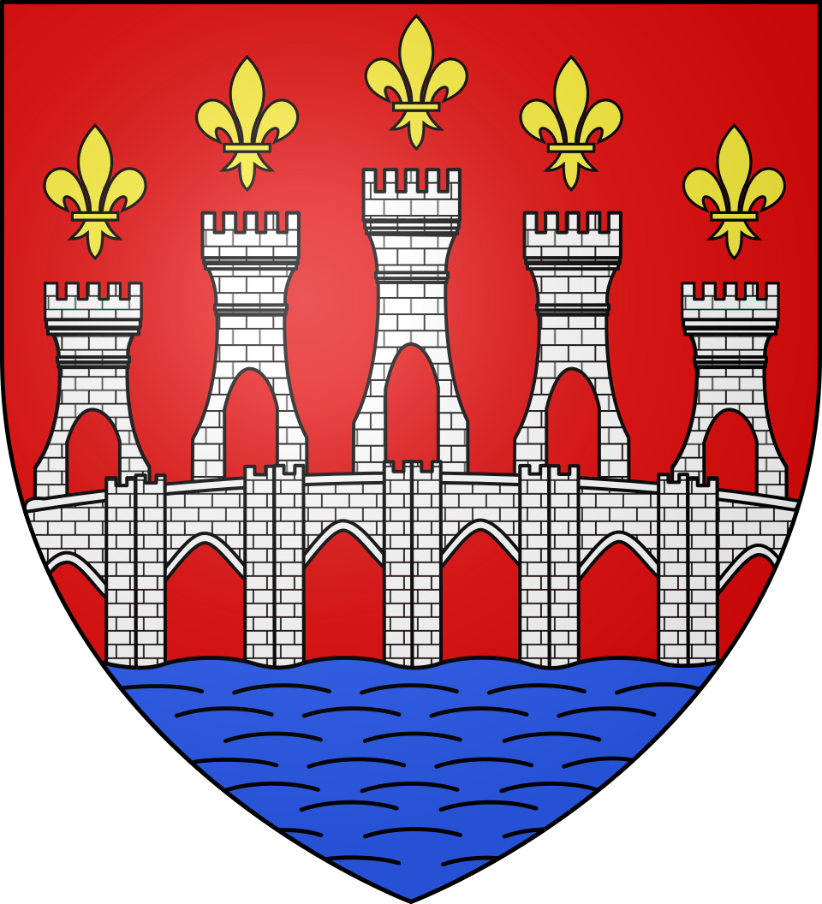
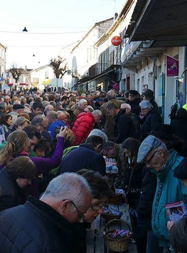

La réputation de Lalbenque comme capitale de la truffe noire du Quercy s'est construite dès la fin du XIXe siècle, portée par l'arrivée de la ligne de chemin de fer Paris-Toulouse vers 1890. Les courtiers pouvaient alors expédier en un jour leurs précieuses cargaisons vers Paris, Toulouse ou Montauban, et le mardi, la petite gare du village se remplissait de sacs de truffes.

Ce commerce, longtemps informel, s'est institutionnalisé en 1962 avec la mise en place d'un cérémonial codifié qui n'a quasiment pas changé depuis : ouverture du ban à la corde, puis levée du drapeau et coup de sifflet annonçant le début des transactions. Ce protocole, unique en son genre, a forgé la renommée nationale et internationale du village.
Depuis 1994, Lalbenque est labellisé Site Remarquable du Goût, une reconnaissance qui a contribué au rayonnement de la truffe noire du Quercy, dont la culture est aujourd'hui inscrite au patrimoine culturel immatériel français. Alors que le Lot produisait plus de 200 tonnes de truffes au début du XXe siècle, la production actuelle, bien plus modeste, s'établit entre 3 et 10 tonnes par an — mais Lalbenque en reste le marché le plus important du Sud-Ouest.
Depuis 2022, les acteurs de la trufficulture locale se sont mobilisés pour redynamiser cette tradition et faire du village une véritable destination touristique autour de son « diamant noir ».
La truffe noire du Quercy est le fruit d'un champignon souterrain vivant en symbiose avec les racines d'arbres truffiers, le plus souvent des chênes. Cette association, appelée mycorhize, se repère à l'œil nu grâce au « brûlé », une zone dénuée d'herbe qui se forme autour du tronc.
Le trufficulteur plante ses arbres mycorhizés en hiver, à raison de 200 à 400 plants par hectare, puis les entretient patiemment pendant cinq à vingt ans avant d'espérer une première récolte. Un travail de longue haleine, largement tributaire du climat et de la nature du sol.
La récolte elle-même se pratique exclusivement à l'aide d'un chien dressé au cavage, seul capable de repérer avec précision l'emplacement exact du champignon sans endommager la truffière, garantissant ainsi des récoltes futures.
Une production en chute : le Lot ne produit plus aujourd'hui que 3 à 10 tonnes de truffes par an, contre plus de 200 tonnes au début du XXe siècle, du fait de l'exode rural et du recul des truffières traditionnelles.
Un savoir-faire exigeant : la culture truffière demande de longues années avant toute récolte, ce qui freine le renouvellement des plantations face aux aléas climatiques.
La fraude et l'origine : la notoriété du produit expose le marché à des tentatives de confusion avec des truffes importées, d'où l'importance de la vente en circuit direct sur les bancs de Lalbenque.
Une relève à assurer : depuis 2022, producteurs et acteurs locaux se mobilisent pour transmettre ce savoir-faire ancestral aux nouvelles générations et redynamiser la filière.
Assister au marché aux truffes de Lalbenque se prépare : mieux vaut arriver tôt pour profiter pleinement du cérémonial et éviter la foule du cœur d'après-midi.
Dès 13h00, dans le village il est conseillé de se poster le long de la rue principale avant l'ouverture du ban pour ne rien manquer de l'installation des paniers.
Un déjeuner « tout truffe » peut se réserver dans les restaurants du village, avec en vedette la traditionnelle omelette aux truffes.
Une démonstration de cavage chez un producteur, sur réservation, permet de découvrir la recherche de la truffe en truffière avant de rejoindre le marché.
Renseignements et réservations auprès de l'Office de Tourisme Cahors — Vallée du Lot, qui coordonne également les animations de la Fête de la Truffe.